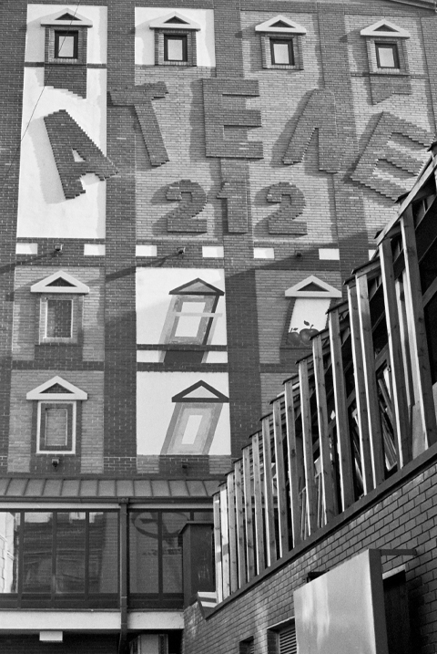

Istorija
Pozorište Atelje 212 je započelo svoj život 12. novembra 1956. godine, premijernim koncertnim izvođenjem Geteovog “Fausta” u režiji Mire Trailović, u kome su igrali Marija Crnobori, Mata Milošević, Viktor Starčić i Ljubiša Jovanović, u maloj sali stare zgrade “Borbe” u kojoj je bilo samo 212 stolica u gledalištu.

Pojava Ateljea 212 značila je prekretnicu u pozorišnom životu ne samo Beograda, već i ovog dela Evrope. Atelje je osnovan kao pozorište u kome bi se igrala nova avangardna drama, od velikog uticaja u Evropi u to vreme. Osim toga, želeli su da osnuju pozorište koje će se i organizaciono razlikovati od postojećih, koje pre svega neće biti institucija. U traganju za pogodnim prostorom u kome bi realizovali svoju ideju otkrili su čitaonicu novinske kuće „Borba“, a Borislav Mihajlović Mihiz nazvao je novo pozorište: Atelje 212. Publika je tog 12. novembra 1956. aplaudirala, a javnost je bila blagonaklona prema ovom neobičnom pozorištu s neobično izvođenim predstavama.
Tokom 54 godine koje su usledile, Atelje 212 je kroz svoje predstave, pisce i reditelje, a naročito kroz svoje velike glumce, izraslo u jedno od najznačajnijih pozorišta sa ovih prostora.
Atelje 212 je bilo prvo pozorište u Istočnoj Evropi koje je igralo “Čekajuci Godoa”, Semjuela Beketa, 1956. godine. Veliki uspeh ove predstave omogućio je čitavom nizu drugih avangardnih drama i autora da se pojave u pozorištu. Sartr, Fokner, Jonesko, Kami, Pinter, Adamov, Ruževic, Džojs, Žari, T.S. Eliot, Vitrak, Šizgal, Kopit, Žene, prvi put su prikazani na ovoj sceni pred jugoslovenskom publikom. Pozorište Atelje 212 je otkrivalo i nove domaće pisce i igralo komade Brane Crnčevića, Aleksandra Popovića, Dušana Kovačevića…
Dugogodišnji upravnik Ateljea bila je Mira Trailović, koja je zajedno sa Jovanom Ćirilovim inicirala osnivanje jednog od najvećih evropskih pozorišnih festivala, BITEF, koji je nastao 1967. godine u Ateljeu 212, i traje preko četiri decenije.
Posle Mire Trailović na čelo Ateljea 212 dolazi Ljubomir Draškić, koji je u pozorištu, kao mladi reditelj, gotovo od samog osnivanja. Za dvanaest godina, koliko je bio upravnik, pozorište proširuje svoj glumački ansambl mladim umetnicima, i dobija novu zgradu. 1992. godine Atelje 212 u adaptiranoj zgradi postaje jedno od najsavremenije opremljenih pozorišta na Balkanu. Velika scena ima 385 mesta u gledalištu, a Teatar u podrumu 141.
Peti upravnik Ateljea 212 bio je Nebojša Bradić, koji se na toj funkciji zadržao vrlo kratko (ni celu jednu sezonu). Svetozar Cvetković, glumac i dugogodišnji član ansambla ove kuće, bio je 12 godina upravnik Ateljea 212 (od 1997. do 2009.). Kokan Mladenović, pozorišni reditelj vodio je pozorište od 2009. do 2012. godine. Sadašnji direktor je dramaturg i književnik Ivana Dimić, čiji je profesionalni početak vezan za ovu kuću. Danas Atelje 212 ima stalni ansambl od 33 glumca, ali je otvoren i za one umetnike koji nisu stalno vezani za ovo pozorište. Najveća glumačka imena i dalje igraju na sceni Ateljea 212, a najbolji domaći i internacionalni reditelji rade u ovoj kući. Na sceni Ateljea 212 igraju se nove drame savremenih domaćih i stranih autora, kojima pozorište daje svoj, vrlo prepoznatljiv pečat.
Tokom 56 godina svog postojanja, Atelje 212 je izraslo u jedno od najznačajnijih pozorišta sa ovih prostora. Poslednjih sezona nametnulo se kao lider regionalne saradnje i uspostavljanja jedinstvenog kulturnog prostora i obeležilo je svojim uspesima pozorišni život i Beograda i čitavog prostora bivše Jugoslavije. Zbog izuzetnih rezultata, na predlog pozorišta „Gavella“ iz Zagreba i SNG iz Maribora, 28. maja 2012. godine postali smo član Evropske teatarske konvencije, najznačajnije pozorišne organizacije u Evropi, koja okuplja 44 najuspešnije evropske teatarske kuće.